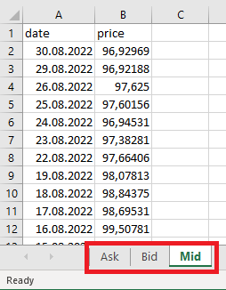
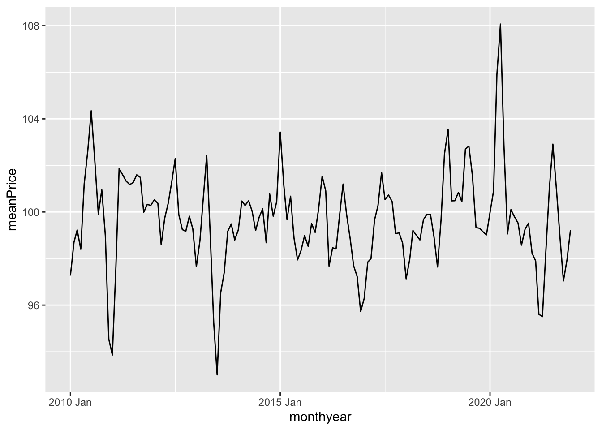
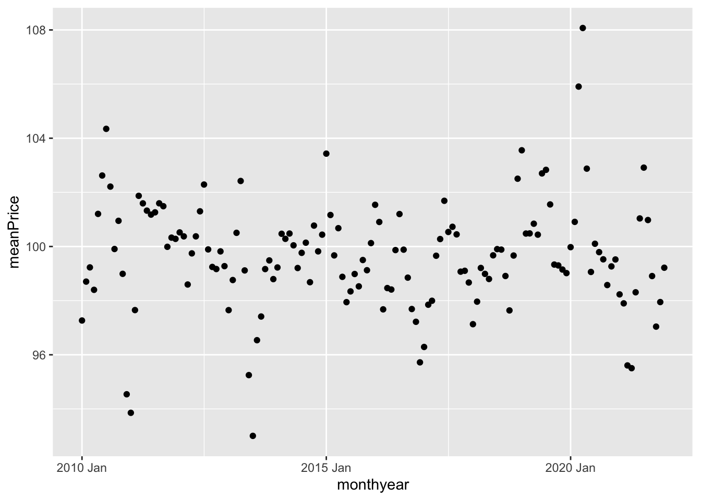
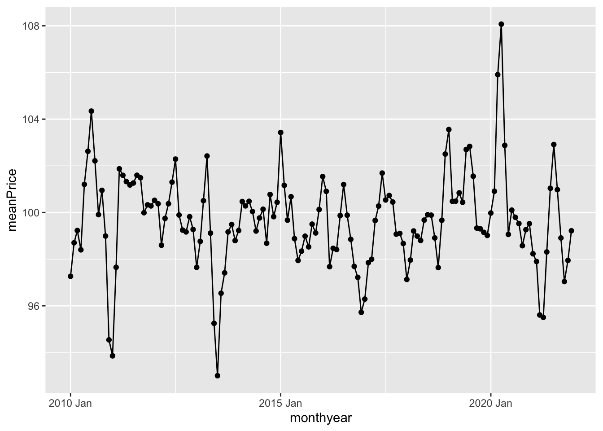
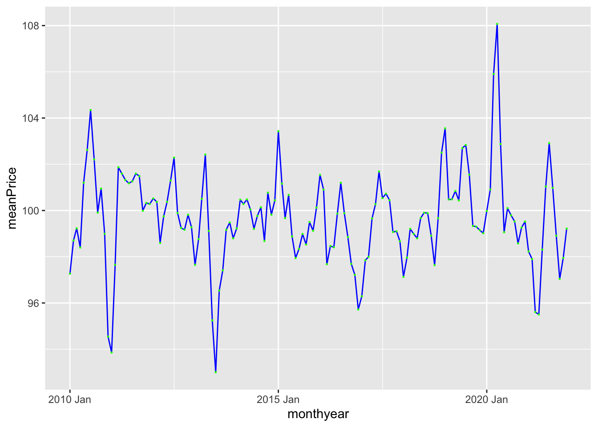
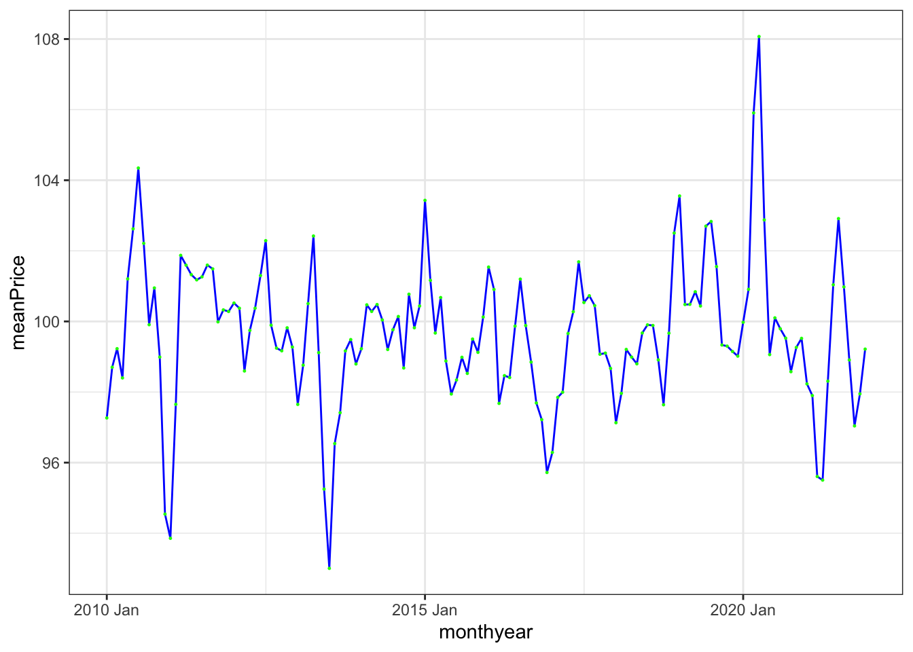
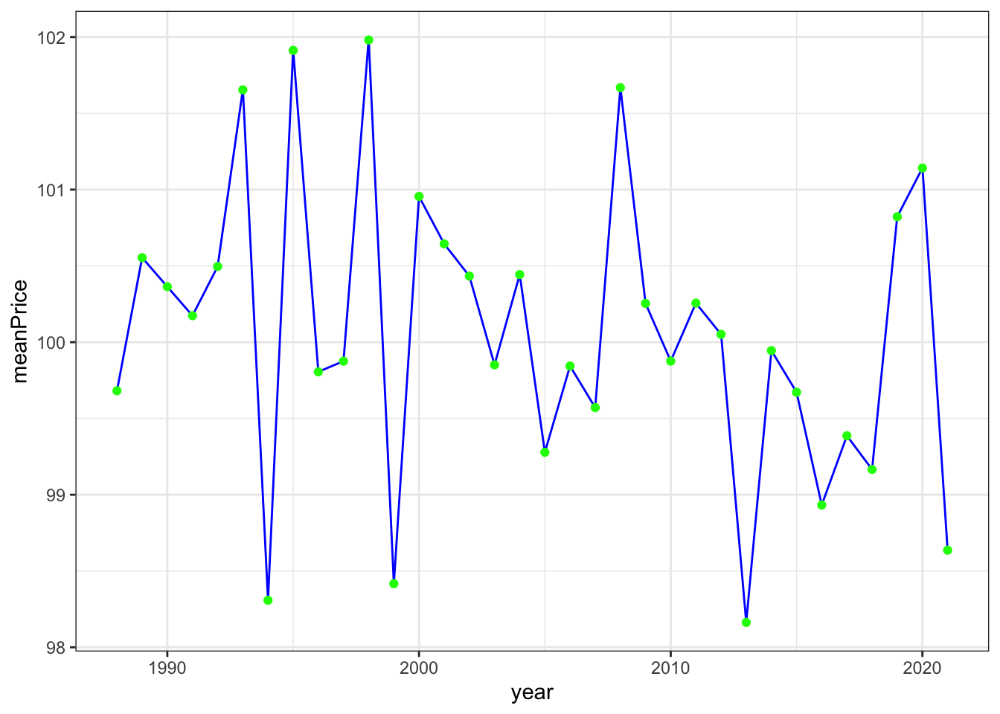

setwd("../path/to/the/folder/")Recap R
If R and Rstudio are completely new tools for you, this section will probably not be detailed enough to get you started, but fear not. There are lots of good and useful online material for learning basic R. One possibility is to work through the first section (chapter 1-8) of the book R for data science by Wickham and Grolemund available online. There is also a free Coursera course on R programming, recommended by the textbook authors. The course BAN420 is recommended for taking this course. If you have not completed that course, you will find the material as videos on the BAN420 website. I recommend going through this material if you do not know it already. What follows below is a (very) short version of parts of Tuesday-Wednesday.
We will be using the tidyverse approach to doing data manipulation. This is in line with what you learn in courses like BAN400 R programming for Data Science or BAN420 Introduction to R and also with what the authors of the textbook does (Hyndman and Athanasopoulos,2021).
On canvas, you will find an excel file called US10YTRR.xlsx in the R recap folder. If you have experience with R, try to solve the following exercise without looking at the suggested solution.
Exercises
You are given an .xlsx file (MS excel format) of daily prices of an US 10 year Treasury bond. The excel file contains several sheets with the
- Closing ask price (“Ask”)
- Closing bid price (“Bid”)
- Closing mid price (“Mid”)
Each contains two columns: date and price. In the figure below we have taken a screen shot of the Mid sheet.

Do the following:
- Set working directory.
- Load the data for the Mid price.
- Format the date column in Date format.
- Add a column for which year the observation is from.
- Filter away observations prior to 2010 and after 2021.
- Remove columns except date and price.
- Summarize data to monthly mean prices (hint: use tsibble::yearmonth function - this might be new to you!).
- Make a plot with months on x-axis and monthly means on y-axis.
- Save the figure to file.
If you get stuck, check out the (“hidden”) suggested solutions below.
Show suggested solutions
First, you need to set your working directory to the folder where you have saved the downloaded file and where you want to save the final figure. This can be done using the user interface in RStudio (“Session” -> “Set working directory” -> …) or using the command
You are interested in reading in the closing mid price. To read in this data, you may use the following code.
library(fpp3) # loading textbook package
library(tidyverse)
library(readxl) # loading package for reading excel files
dat <- read_excel("data/US10YTRR.xlsx", sheet = "Mid")
head(dat) # printing out the first 6 rows# A tibble: 6 × 2
date price
<dttm> <dbl>
1 2022-08-30 00:00:00 96.9
2 2022-08-29 00:00:00 96.9
3 2022-08-26 00:00:00 97.6
4 2022-08-25 00:00:00 97.6
5 2022-08-24 00:00:00 96.9
6 2022-08-23 00:00:00 97.4The sheet argument specifies which sheet in the excel file we want to read. The read_excel function is also quite smart so it recognizes that the date column is a date and automatically format it accordingly. It is however perhaps not so useful to also include the time of the day (all is 00:00:00), so let us remove this part.
dat %>%
mutate(date = as.Date(date))# A tibble: 8,804 × 2
date price
<date> <dbl>
1 2022-08-30 96.9
2 2022-08-29 96.9
3 2022-08-26 97.6
4 2022-08-25 97.6
5 2022-08-24 96.9
6 2022-08-23 97.4
7 2022-08-22 97.7
8 2022-08-19 98.1
9 2022-08-18 98.8
10 2022-08-17 98.7
# ℹ 8,794 more rowsHere I have used the mutate function. This is a function we use to either mutate (change) an existing column or create a new one. In this case we mutated the date column transforming it to a “Date” object/format. We could also be interested in adding a column for which year the observation is from.
dat %>%
mutate(date = as.Date(date),
year = year(date))# A tibble: 8,804 × 3
date price year
<date> <dbl> <dbl>
1 2022-08-30 96.9 2022
2 2022-08-29 96.9 2022
3 2022-08-26 97.6 2022
4 2022-08-25 97.6 2022
5 2022-08-24 96.9 2022
6 2022-08-23 97.4 2022
7 2022-08-22 97.7 2022
8 2022-08-19 98.1 2022
9 2022-08-18 98.8 2022
10 2022-08-17 98.7 2022
# ℹ 8,794 more rowsHere we have used the year function from the lubridate package, which is loaded with the fpp3 package. The operator %>% is used to add operations to the data manipulation pipeline in the given order. We start with the data object (a tibble) and add a mutate operation to that where we first transform the date column and add a year column. Now that we are pleased with our pipeline, let us save this to the dat object.
dat <- dat %>%
mutate(date = as.Date(date),
year = year(date))
dat %>% glimpse()Rows: 8,804
Columns: 3
$ date <date> 2022-08-30, 2022-08-29, 2022-08-26, 2022-08-25, 2022-08-24, 202…
$ price <dbl> 96.92969, 96.92188, 97.62500, 97.60156, 96.94531, 97.38281, 97.6…
$ year <dbl> 2022, 2022, 2022, 2022, 2022, 2022, 2022, 2022, 2022, 2022, 2022…The glimpse function summarizes the tibble/data frame.
filter and select
Now, the data ranges from/to
range(dat$date)[1] "1987-08-03" "2022-08-30"but you only want to use data from 2010 onwards. To do this, we use the filter function. This function is useful for selecting rows that fulfill some condition, in this case year >= 2010. Let us make a pipeline for this
dat %>%
filter(year >= 2010)# A tibble: 3,178 × 3
date price year
<date> <dbl> <dbl>
1 2022-08-30 96.9 2022
2 2022-08-29 96.9 2022
3 2022-08-26 97.6 2022
4 2022-08-25 97.6 2022
5 2022-08-24 96.9 2022
6 2022-08-23 97.4 2022
7 2022-08-22 97.7 2022
8 2022-08-19 98.1 2022
9 2022-08-18 98.8 2022
10 2022-08-17 98.7 2022
# ℹ 3,168 more rowsSince 2022 is not a complete year (in the data), you also do not want observations after 2021. Then you can add this as an extra condition.
dat %>%
filter(year >= 2010, year <=2021)# A tibble: 3,012 × 3
date price year
<date> <dbl> <dbl>
1 2021-12-31 98.8 2021
2 2021-12-30 98.8 2021
3 2021-12-29 98.4 2021
4 2021-12-28 99.0 2021
5 2021-12-27 99.1 2021
6 2021-12-23 98.9 2021
7 2021-12-22 99.3 2021
8 2021-12-21 99.2 2021
9 2021-12-20 99.5 2021
10 2021-12-17 99.7 2021
# ℹ 3,002 more rowsAlternatively, you can use the between function
dat %>%
filter(between(year, 2010, 2021))which will produce the same result. Another useful function is called select. While filter is used on the rows of your data, select is for columns. Say we don’t need the year column after having filtered out the years we don’t want. We can then either select the columns we want to keep
dat %>%
filter(between(year, 2010, 2021)) %>%
select(date, price)or remove the columns we do not want
dat %>%
filter(between(year, 2010, 2021)) %>%
select(-year)# A tibble: 3,012 × 2
date price
<date> <dbl>
1 2021-12-31 98.8
2 2021-12-30 98.8
3 2021-12-29 98.4
4 2021-12-28 99.0
5 2021-12-27 99.1
6 2021-12-23 98.9
7 2021-12-22 99.3
8 2021-12-21 99.2
9 2021-12-20 99.5
10 2021-12-17 99.7
# ℹ 3,002 more rowsgroup_by and summarize
We are interested in calculating the monthly mean price. In the tidyverse pipeline this means we want to group our observations according to month and year and summarize by month and year the mean of the observations.
(monthlyMeans <- dat %>%
filter(between(year,2010,2021)) %>%
mutate(monthyear = tsibble::yearmonth(date)) %>%
group_by(monthyear) %>%
summarize(meanPrice = mean(price)))# A tibble: 144 × 2
monthyear meanPrice
<mth> <dbl>
1 2010 Jan 97.3
2 2010 Feb 98.7
3 2010 Mar 99.2
4 2010 Apr 98.4
5 2010 May 101.
6 2010 Jun 103.
7 2010 Jul 104.
8 2010 Aug 102.
9 2010 Sep 99.9
10 2010 Oct 101.
# ℹ 134 more rowsThis pipeline could be read as first we take out observations prior to 1988 and after 2021, then we group the observations according to year and summarize the mean price by year. Note that this operation will delete any columns that are not in the group_by or being calculated in the summarize.
ggplot
Plotting a data frame is convenient to do using the ggplot2 package. This will (when used appropriately) produce beautiful figures. Let us plot the time series at hand. The ggplot2 follows the same logic with a pipeline, but instead of the %>% operator, we add elements to the figure using +. We need to specify the data object and the name of the x and y columns to be plotted. Everything in the figure that is to vary based on values in the data frame needs to be wrapped in a aes (aesthetic) function (here the x and y arguments). By adding the geom_line() we insert a line.
ggplot(data = monthlyMeans,
aes(x=monthyear, y = meanPrice)) +
geom_line()
We could instead add geom_point()
ggplot(data = monthlyMeans,
aes(x=monthyear, y = meanPrice)) +
geom_point()
or do both
ggplot(data = monthlyMeans,
aes(x=monthyear, y = meanPrice)) +
geom_line() +
geom_point()
We can change the colors and decrease the size of the points:
ggplot(data =monthlyMeans,
aes(x=monthyear, y = meanPrice)) +
geom_line(color = "blue") +
geom_point(color = "green", size = .2)
Or maybe we do not want to use the default theme: –>
ggplot(data = monthlyMeans,
aes(x=monthyear, y = meanPrice)) +
geom_line(color = "blue") +
geom_point(color = "green", size = .2) +
theme_bw()
We can also include the plotting in our data manipulation pipeline. For instance, lets summarize the data by year and plot the resulting yearly time series.
dat %>%
filter(between(year, 1988, 2021)) %>%
group_by(year) %>%
summarize(meanPrice = mean(price)) %>%
# adding plotting to pipeline:
ggplot(aes(x=year, y = meanPrice)) +
geom_line(color = "blue") +
geom_point(color = "green") +
theme_bw()
Epilogue
We cannot illustrate all aspects here, but you will learn new elements by studying examples throughout the course. This recap is mostly for remembering the basics of data manipulation in R and simple plotting. As you will see in the continuation, the coding is not much more complex then what you have seen here and the fpp3 package uses the same type of logic and syntax as the tidyverse. There will however be some new functions specific for time series analysis that you will need to learn.